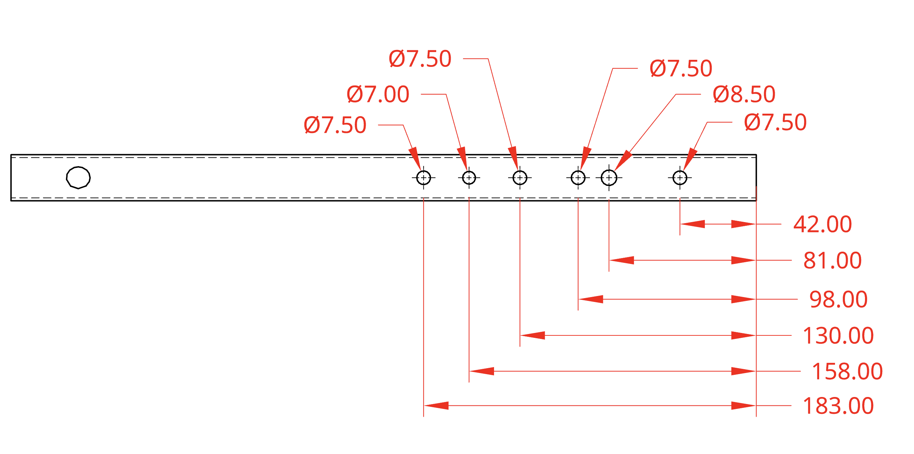
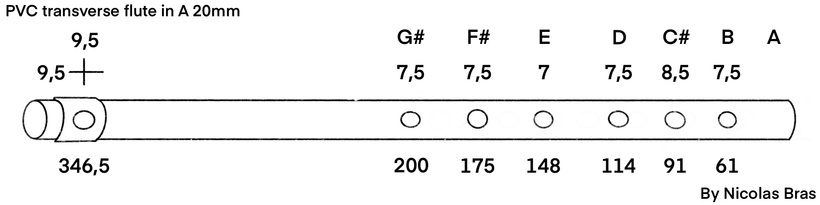

When I was younger, I learned how to play the flute and I saw this project where kids made their own music instrument from the trash in their local landfill. This sustainable and creative method of engineering inspired me to make my own flute due to its simplicity compared to other instruments that I don’t know how to play.
A transverse flute can be just a pipe, with one end blocked. I decided to use some PVC pipes I had left over from previous years of VEX fields, which is now obsolete since there is a new game every year. Upon doing some research, I came across a youtuber called Nicolas Bras. This guy is very notable from the sheer amount of expertise he has in making PVC flute. This is the video I used which to guide me to make my own flute: https://youtu.be/Obpa9bzpzvQ.
Calculating Holes
The physics of a flute involves calculating the distance of the finger holes from the embouchure can be calculated using the formula for an open tube because the embouchure counts as the other hole where air can escape. Here are my calculated values:
Here are my calculated values:
These were the hole lengths from the end of the flute I calculated myself using the formula. These distance didn't make the rigth pitch, so I had to redo it.
New Holes
These values turned out to be inaccurate, and caused the flute to be off pitch. Since there isn’t a very accurate way for me to calculate the values of these holes to create the right pitch, I used Nicolas Bras’s blueprint: https://www.patreon.com/posts/46918629
Nicolas Bras's blueprint found on his patreon, found on the link above.
This worked much better and I was able to recreate the flute.
Results
The building process involved hacksawing a PVC to the right length and marking the distances on flute and drilling them out with the corresponding size drill bit. The mouthpiece was made using half of a segment of PVC (cut right down the long way) and I used a heatgun to make it conform to a larger radius. At the end of the flute, I could not find a right size endplug and ended up fishing out an old car wheel and stripping off the rubber tire, using the plastic part and hammering it into the end. At the end, I deburred the finger holes and tested out the flute! This is how it Turned out:
Playing something simple.